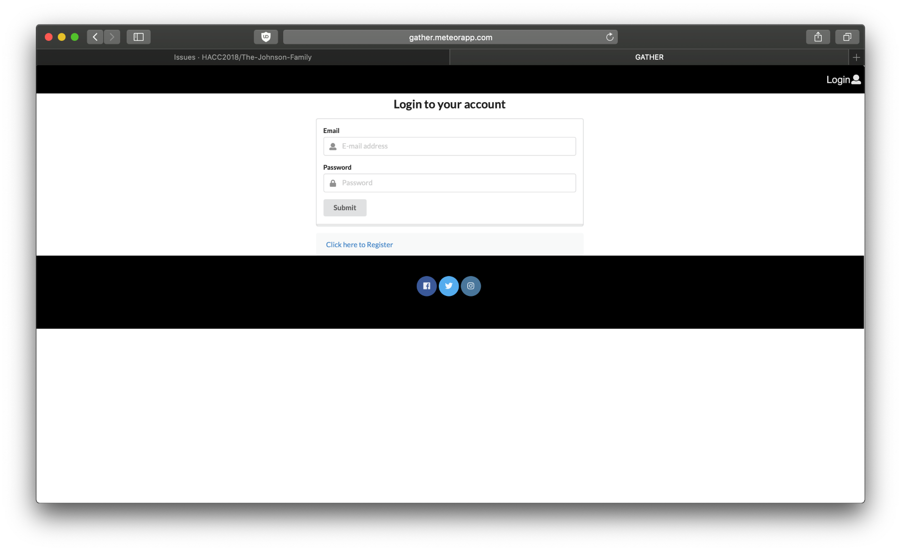
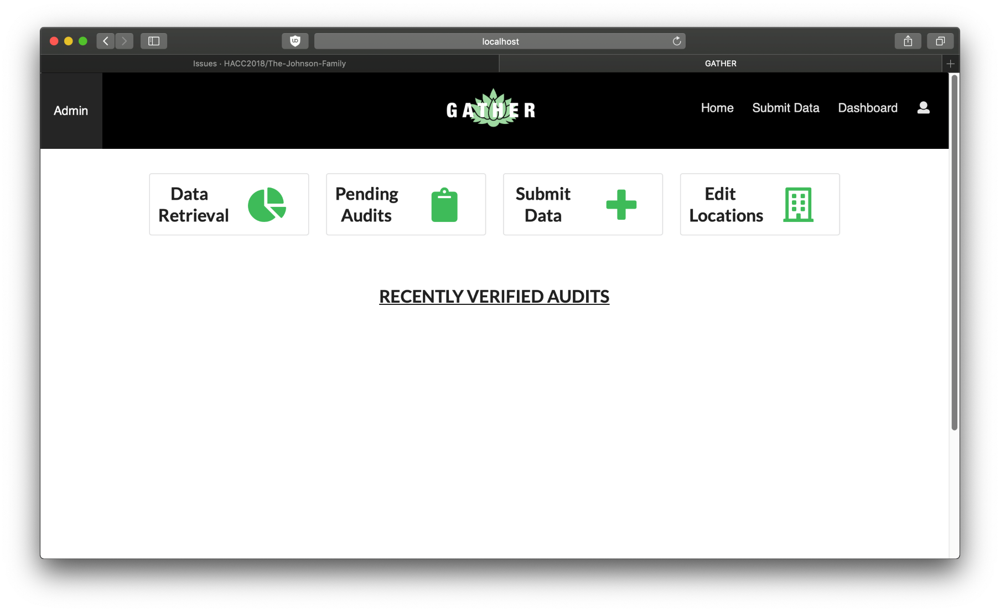
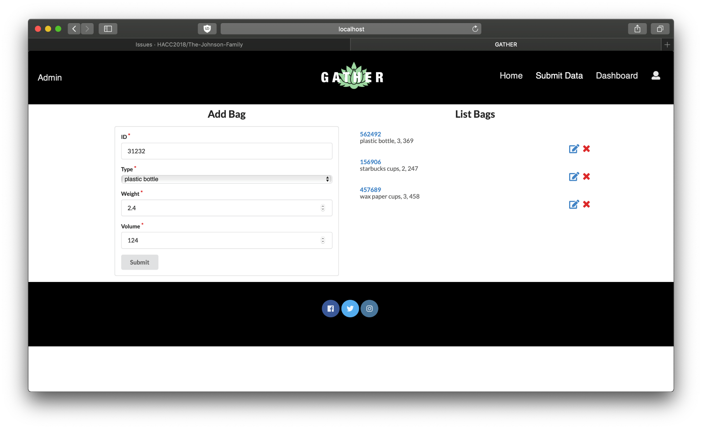

Gather Web App
Gather is a web application my group created for the ICS 314 Final Project. It was my first time develop a web application.
Gather Links:
- You can see the app here: Gather Web App
- Devpost Video
- code
My Contribution
As a member of front end team, I am responsible to create a bunch of mock-up pages and eventually add the functionality. I used Semantic-UI react, Javascript, Meteor and MongoDB for the development. The parts that I have worked on are:
- Landing Page
- Nav Bar
- Footer
- Admin Page
It all started when we went to the 2018 Hawaii Annual Code Challenge (HACC). After all five presenter presented their challenges, we kind decided to do the Waste Audit Challenge. We thought it would be easy since we just need to make the website able to desplay all the data that are inputed by user/admin.
However, it was not that easy. Because we are not use to the new software we just learned, it took a long time to do the research about how to implement the back-end stuff. After weeks and days of hard-working, we were able to submit our final product on time and suprisely we got to present in front of all the judges. Although we did not get any awards, it was already a fantastic exprience.
So because we participate in the HACC, we were able use our project for the Final project of the ICS 314 class. Even though we started earlier than everyone else in the class, we still spend lots of time to try to make all the back-end function work and make sure thing at front-end is connecting with the back-end. This was not a easy process, but when things able to work the way you want, you feel accomplished.
In the future, our team may implement more feature to the app to satisifacte needs of users more.
Overview
The Department of Sustainability, or DoS, has a great process for identifying and tracking suspected contributors in waste management practices. Through waste audits, community members can contribute to the cause and provide valuable data that can be analyzed to draw important conclusions and provide a basis to incite change at the legislative level. However, once the waste audit is done, the data must be input manually by DoS personnel. In addition, the database access and storage is limited to the local level and not organized in an easily manipulable structure. This makes it difficult to visualize data to emphasize important issues and conclusions because it must be done manually through much analysis.
Our solution is a two-pronged approach involving a web app and a smart bin. Our web app “Gather” features a robust, easily-accessible database in the cloud, a submission form providing a streamlined, delegated approach to data entry, and a compelling selection of visualizations that accurately convey the implications in the data—all wrapped in a clean, simple, and intuitive user interface. Our smart bin leverages the cloud database, introducing a continuous stream of data that facilitates an increase of sample size in orders of magnitude at a much smaller cost.
In order to realize our solution, we are implementing a database in a series of collections through MongoDB. The web app will use the JavaScript framework Meteor with Semantic UI React, simplifying the process of designing and deploying a clean, intuitive app. The accompanying smart bin will be implemented using proximity and load cell sensors connected to a NodeMCU WiFi Development Board that’s programmed to push data to our database using the MQTT protocol.

Web App Features
When you first visit the page, you will be greeted by our Landing Page!

After registering or signing in to your account, you may submit data from a trash audit event. When logged in as an administrator, you are able to view the ‘Admin’ page. This page allows the user to view and accept incoming data, customize visualizations in the data, and view more in-depth statistics.
Below are the pages of the app:


